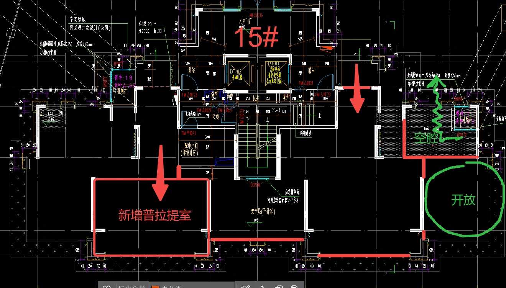

Key Signals
最值得优先投入的是运动健康与女性友好空间。
22份有效问卷显示，健身跑步是共同刚需；瑜伽、普拉提是女性友好与品质提升的关键需求；15幢具备升级为标杆女性运动空间的主题基础。
95.5%
需要跑步机区域
90.9%
需要常规健身器械
92.3%
女业主会使用瑜伽区
72.7%
受访者集中在26-45岁
功能需求强度
每周2次以上使用潜力
15幢重点
“优雅生活”应从开放会客升级为云境美塑会馆。
15幢已经具备瑜伽、普拉提、更衣和卫生间基础。下一步应尽量全封闭，保留原普拉提室封闭属性，扩容瑜伽舞房，并提升地面、镜墙、灯光、新风除湿和器械标准。
- 15幢尽量全封闭，保留并扩大瑜伽舞房、普拉提室和私教/冥想/拉伸房。
- 14幢女王空间和15幢女性运动空间装标对标19幢绅士会所（高装标体现逼格），皮质/木饰面/金属细节。
- 10/12形成运动功能矩阵，补足健身、乒乓、瑜伽和拉伸容量；18幢承担学习冥想补充。
- 6/16等低频主题空间用可变家具和复合运营提高实际使用率。

15幢优化平面沟通稿：需进一步保留封闭空间并强化女性运动功能
Building Matrix
主题不推翻，表达再升级；空间不闲置，功能可复合。
以下矩阵把原主题、升级主题、左右功能和装标重点放在同一张表里，便于直接用于方案沟通。